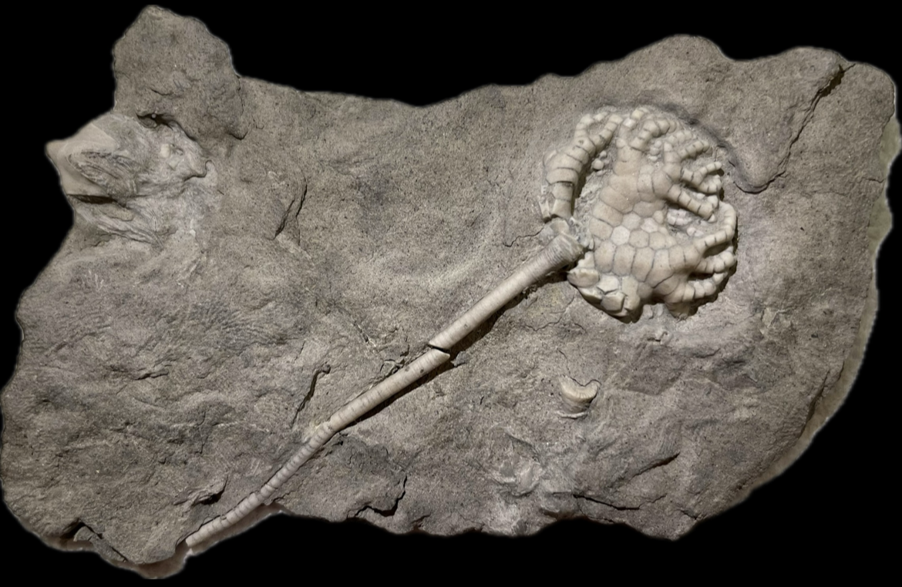

HOME
1. Taxocrinus whitfieldi
2. Pentremites girtyi
• Mississippian
• Indian Springs Shale, Big Clifty Formation
• Sulphur, Crawford County, Indiana, USA
Size: 2 cm crown for the
Taxocrinus

Copyright © 2024 by Samuel Kim, all rights reserved